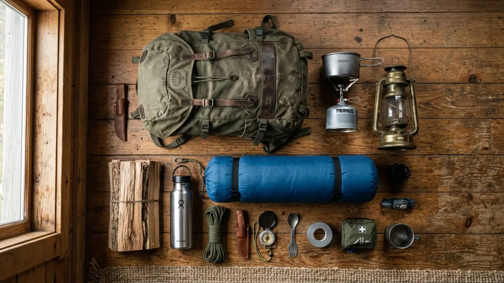
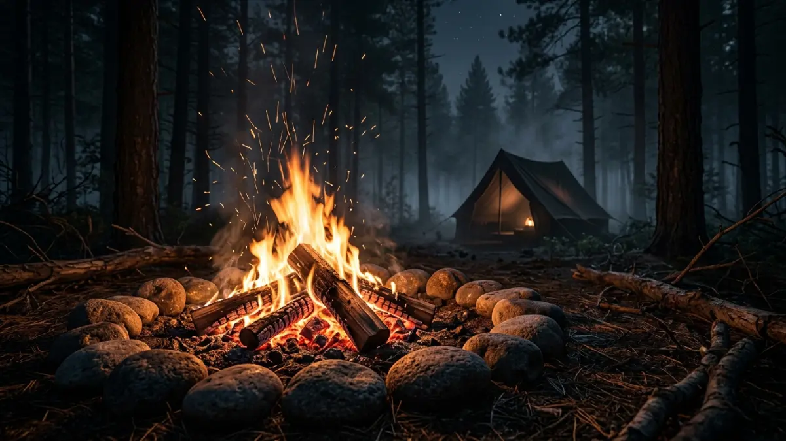

Persiapan matang adalah kunci keberhasilan dan keselamatan dalam berkemah.Cara berkemah yang benar dimulai dari perencanaan matang, pemilihan perlengkapan tepat, penguasaan teknik dasar di alam terbuka, dan komitmen menjaga keselamatan serta kelestarian lingkungan.
- Apa Itu Berkemah dan Mengapa Banyak Orang Melakukannya?
- Langkah 1: Perencanaan Sebelum Berkemah
- Apa Saja Perlengkapan Berkemah yang Wajib Dibawa?
- Bagaimana Cara Memilih Lokasi Kemah yang Tepat?
- Cara Mendirikan Tenda dengan Benar
- Teknik Dasar Berkemah yang Perlu Dikuasai Pemula
- Keselamatan Berkemah: Panduan Penting
- Prinsip Leave No Trace dalam Berkemah
- Kesalahan Umum Saat Berkemah dan Cara Menghindarinya
- FAQ
Apa Itu Berkemah dan Mengapa Banyak Orang Melakukannya?
Berkemah adalah kegiatan bermalam di alam terbuka menggunakan tenda atau shelter sementara, umumnya di pegunungan, hutan, tepi danau, atau pantai. Kegiatan ini dilakukan oleh individu, keluarga, maupun kelompok yang ingin menikmati alam, melatih kemandirian, atau sekadar keluar dari rutinitas sehari-hari.
Manfaat berkemah mencakup pemulihan mental, peningkatan kemampuan problem-solving, penguatan ikatan sosial, serta kontak langsung dengan alam yang terbukti menurunkan kadar kortisol (hormon stres). Berkemah juga melatih keterampilan praktis seperti memasak di luar ruangan, navigasi, dan pertolongan pertama.
Langkah 1: Perencanaan Sebelum Berkemah
Perencanaan yang matang menentukan 70% keberhasilan dan keamanan perjalanan berkemah, jauh sebelum tenda pertama kali dibuka.
Tentukan Lokasi dan Durasi
Pilih lokasi sesuai tingkat pengalaman. Untuk pemula, campground resmi dengan fasilitas toilet dan ranger adalah pilihan paling aman. Lokasi seperti taman nasional, hutan lindung, atau bumi perkemahan yang terdaftar menawarkan struktur yang mendukung keselamatan pengunjung baru.
Tentukan durasi kemah: satu malam untuk percobaan pertama adalah keputusan bijak. Perpanjang durasi setelah pengalaman bertambah.
Riset Cuaca dan Kondisi Medan
Cek prakiraan cuaca minimal 3 hari sebelum keberangkatan. Hindari berkemah saat musim hujan lebat atau angin kencang jika belum berpengalaman. Ketahui karakteristik medan: apakah ada sungai yang berpotensi banjir, tebing yang curam, atau satwa liar yang aktif di malam hari.
Beritahu Orang Lain
Selalu tinggalkan rencana perjalanan lengkap, termasuk lokasi kemah, rute, dan perkiraan waktu kembali, kepada orang yang tidak ikut. Langkah ini krusial untuk koordinasi penyelamatan jika terjadi keadaan darurat.
Apa Saja Perlengkapan Berkemah yang Wajib Dibawa?
Perlengkapan berkemah yang tepat mencakup tiga kategori utama: shelter, tidur, dan keselamatan, ditambah kebutuhan makan dan navigasi sesuai durasi kemah.
Perlengkapan Shelter dan Tidur
- Tenda sesuai kapasitas dan kondisi cuaca (tenda dome untuk pemula)
- Sleeping bag dengan rating suhu yang sesuai ketinggian lokasi
- Matras atau sleeping pad untuk insulasi dari tanah
- Flysheet atau terpal tambahan sebagai lapisan pelindung hujan
Perlengkapan Keselamatan dan Navigasi
- Kotak P3K berisi plester, perban, antiseptik, obat umum, dan obat pribadi
- Senter atau headlamp beserta baterai cadangan
- Peluit darurat dan cermin sinyal
- Peta topografi lokasi dan kompas (jangan andalkan GPS saja)
- Poncho atau jas hujan
Kebutuhan Air dan Makanan
- Botol air minimal 2 liter per orang per hari
- Filter air atau tablet purifikasi
- Makanan yang tidak mudah busuk dan mudah dimasak: mi instan, nasi kemasan, energy bar
- Kompor portable, bahan bakar, dan peralatan masak ringan
Perlengkapan Tambahan
- Pisau lipat serbaguna
- Tali paracord minimal 10 meter
- Sunscreen dan obat nyamuk
- Kantong sampah ekstra untuk prinsip Leave No Trace
Bagaimana Cara Memilih Lokasi Kemah yang Tepat?
Lokasi kemah yang baik adalah tempat yang datar, terlindung dari angin, jauh dari jalur air, dan memiliki akses mudah ke sumber air bersih tanpa berada terlalu dekat dengannya.
Kriteria Lokasi Ideal
- Tanah datar atau sedikit miring ke arah kaki tenda, bukan ke kepala
- Terlindung dari angin dominan, idealnya di balik pohon atau bukit kecil
- Minimal 60 meter dari sungai, danau, atau jalur air untuk menghindari banjir dan kontaminasi
- Jauh dari pohon mati atau dahan patah yang berisiko jatuh
- Tidak berada di jalur lintasan satwa liar
Jangan mendirikan tenda di lembah sempit yang rawan banjir bandang, di bawah tebing yang rapuh, atau di area yang terlihat seperti jalur aliran air meski saat itu kering. Di musim kemarau, jauhi vegetasi kering yang mudah terbakar.

Api unggun adalah salah satu teknik dasar berkemah yang perlu dikuasai dengan aman.Cara Mendirikan Tenda dengan Benar
Mendirikan tenda yang benar membutuhkan waktu 10–20 menit untuk tenda dome standar dan memastikan konstruksi cukup kuat menghadapi angin atau hujan ringan.
- Pilih dan bersihkan lahan dari batu, ranting, dan kerikil tajam.
- Gelar groundsheet atau footprint tenda sebelum memasang tenda utama.
- Pasang tiang (pole) sesuai panduan tenda, biasanya dengan sistem klik atau selipkan ke sleeve.
- Kencangkan semua sudut tenda ke tanah menggunakan pasak (peg) pada sudut 45 derajat.
- Pasang flysheet di atas tenda dan pastikan tidak menyentuh bagian dalam tenda agar kondensasi tidak merembes masuk.
- Kencangkan guyline (tali tambahan) jika angin diprediksi kencang.
Teknik Dasar Berkemah yang Perlu Dikuasai Pemula
Menguasai teknik dasar berkemah memperbesar peluang keselamatan dan kenyamanan secara signifikan, bahkan untuk perjalanan satu malam sekalipun.
Membuat Api yang Aman
Gunakan ring batu atau fire pit yang sudah tersedia jika ada. Kumpulkan bahan bakar kering: daun kering, ranting kecil (tinder), ranting sedang (kindling), dan kayu besar (fuel). Nyalakan dari tinder terlebih dahulu, tambahkan kindling secara bertahap, baru masukkan fuel.
Jangan pernah tinggalkan api tanpa pengawasan, dan pastikan api benar-benar padam dengan air sebelum tidur atau meninggalkan lokasi.
Mengolah Air Minum
Air dari sumber alam tidak boleh langsung diminum. Gunakan filter portabel, rebus selama minimal 1 menit pada ketinggian normal atau 3 menit di atas 2.000 meter, atau gunakan tablet purifikasi sesuai dosis.
Orientasi Dasar
Pelajari cara membaca kompas dan mencocokkan dengan peta sebelum berangkat. Tandai titik masuk jalur dan lokasi kemah di peta. Jika tersesat, hentikan pergerakan, tetap tenang, dan gunakan peluit untuk memberi sinyal.
Keselamatan Berkemah: Panduan Penting
Keselamatan berkemah bergantung pada tiga pilar: persiapan sebelum berangkat, kewaspadaan selama di lapangan, dan kemampuan respons darurat yang terlatih.
Ancaman Umum dan Cara Menghadapinya
- Hipotermia: kenakan lapisan pakaian yang cukup, hindari basah, dan masuk sleeping bag segera jika menggigil
- Dehidrasi: minum secara teratur, jangan tunggu sampai haus
- Satwa liar: simpan makanan dalam wadah tertutup rapat, jangan bawa makanan ke dalam tenda
- Tersesat: jangan panik, diam di tempat, aktifkan sinyal darurat
Protokol Darurat
Jika ada anggota kelompok yang cedera serius, kirim minimal dua orang untuk mencari bantuan sementara satu orang tetap menemani korban. Pastikan semua anggota tahu nomor darurat setempat dan posisi koordinat GPS lokasi kemah.
Prinsip Leave No Trace dalam Berkemah
Leave No Trace (LNT) adalah etika berkemah yang memastikan alam tetap lestari setelah kunjungan. Prinsip ini diadopsi secara global dan menjadi standar kegiatan outdoor bertanggung jawab.
Tujuh prinsip LNT meliputi: merencanakan perjalanan dengan matang, berjalan dan berkemah di permukaan yang sudah terdampak, membuang sampah dengan benar, meninggalkan apa yang ditemukan, meminimalkan dampak api unggun, menghormati satwa liar, dan bersikap penghargaan terhadap pengunjung lain.
Dalam praktiknya: bawa pulang semua sampah termasuk kulit buah, gunakan toilet portabel atau galian sedalam 15–20 cm minimal 60 meter dari air untuk keperluan sanitasi, dan jangan memetik atau merusak tanaman.
Kesalahan Umum Saat Berkemah dan Cara Menghindarinya
Pemula paling sering melakukan kesalahan dalam hal beban bawaan (terlalu banyak atau terlalu sedikit), pemilihan lokasi yang kurang aman, dan kurangnya persiapan menghadapi cuaca buruk.
- Membawa terlalu banyak barang: buat daftar perlengkapan dan timbang tas sebelum berangkat, idealnya tidak lebih dari 20–25% berat badan
- Tidak mencoba mendirikan tenda di rumah terlebih dahulu: latih di halaman sebelum ke lapangan
- Mengabaikan cuaca: selalu siapkan jas hujan meski cuaca cerah saat berangkat
- Tidak memberitahu rencana perjalanan kepada orang lain: ini bukan pilihan, ini kewajiban keselamatan
- Membuang sampah sembarangan: siapkan kantong sampah khusus sejak awal packing
Cara berkemah yang aman dan menyenangkan bertumpu pada tiga fondasi: persiapan yang tidak tergesa-gesa, perlengkapan yang sesuai kebutuhan, dan penghormatan terhadap alam. Mulailah dari lokasi yang mudah dan dekat, kuasai teknik dasar sebelum menaikkan level kesulitan, dan selalu utamakan keselamatan di atas segalanya.
FAQ
1. Berapa biaya minimal untuk mulai berkemah?
Untuk berkemah pertama kali, biaya perlengkapan dasar (tenda, sleeping bag, matras) berkisar antara Rp500.000 hingga Rp2.000.000 untuk kelas entry-level. Banyak perlengkapan bisa dipinjam atau disewa untuk mengurangi pengeluaran awal.
2. Bagaimana cara mengatasi serangan nyamuk saat berkemah?
Gunakan repelen berbahan DEET atau picaridin, kenakan pakaian lengan panjang di malam hari, pastikan ritsleting tenda selalu tertutup, dan hindari mendirikan tenda di dekat genangan air.
3. Apa yang harus dilakukan jika hujan saat berkemah?
Pastikan flysheet terpasang dengan benar, galir parit kecil di sekeliling tenda jika hujan deras, simpan pakaian ganti dalam kantong plastik kedap air, dan hindari keluar tenda saat petir.